一、centos7安装
请参考Linux基础的书籍
二、系统配置
1、配置时钟同步
使用Linux命令配置首先进入超级用户，在命令行输入：su root
然后再输入：crontab -e
该命令是 vi 编辑命令，按 i 进入插入模式，按 Esc，然后键入:wq 保存退出
键入下面的一行代码，输入 i，进入插入模式（星号之间和前后都有空格）
0 1 * * * /usr/sbin/ntpdate cn.pool.ntp.org
2、配置主机名
使用 gedit 编辑主机名，如果不可以使用 gedit，请直接使用 vi 编辑器（后面用到 gedit 的地方也同此处处理一致）。在命令行输入：gedit /etc/sysconfig/network
配置信息如下：
NETWORKING=yes #启动网络
HOSTNAME=master #主机名
接着重启网络服务，输入：service network restart
2、配置静态IP
VMWare 编辑菜单 --> 虚拟网络设置删除VMnet8
添加VMnet8
修改模式为NAT
应用
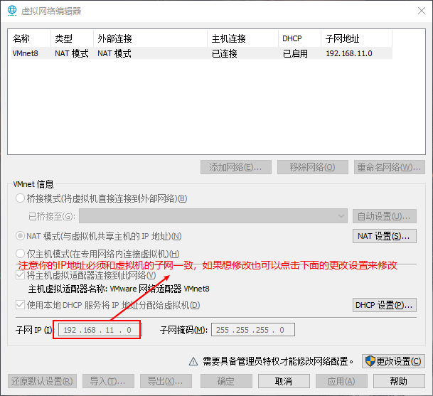
修改配置文件：gedit /etc/sysconfig/network-scripts/ifcfg-ens33
将以下配置添加再文件中(文件已有的配置则将其修改，没有的进行添加)：BOOTPROTO=static # 使用静态IP地址，默认为dhcp
ONBOOT=yes #是否开机启用,默认值为no
IPADDR=192.168.11.110 # 设置的静态IP地址
GATEWAY=192.168.11.2 # 网关地址
NETMASK=255.255.255.0 # 子网掩码
DNS1=8.8.8.8 # DNS服务器
保存后退出
保存后退出
保存后退出
接着重启网络服务，输入：service network restart
3、配置hosts列表
使用gedit命令编辑hosts看列表：gedit /etc/hosts 将下面三行添加到/etc/hosts 文件中：192.168.11.110 master
192.168.11.120 slave1
192.168.11.130 slave2
(slave1和slave2可以在现在配置也可以在克隆后再配置)master和slave1、slave2代表你的主机名
4、接着重启网络服务，输入：service network restart
5、关闭防火墙
systemctl stop firewalld.service
systemctl disable firewalld.service
三、jdk安装
1、使用xshell上传jdk压缩包
xshell使用可参考这个网站：https://blog.csdn.net/qust_gosuccess/article/details/86003565
2、解压jdk：tar -xvf 你的jdk文件
3、配置环境变量(/etc/profile ~/.bashrc ~/.bash_profile )
4、随便选择一个上述文件夹使用gedit命令进行编辑,这里以~/.bash_profile为例(后面所有的环境配置都必须配置再你现在配置的文件下)将以下配置添加或覆盖在当前文件：
export JAVA_HOME=/home/yznaisy/hadoop/jdk1.8.0_141
export PATH=$JAVA_HOME/bin:$PATH
5、使用source命令来使你的配置文件立即生效，如：source ~/.bash_profile
6、使用java -version来测试jdk是否安装成功
四、克隆
1、关机
2、右键-->管理-->克隆
克隆完成后需要修改你的IP地址及主机名
五、设置免密登录
都必须再普通用户下进行下面的操作
1、在终端生成密钥，命令如下（一路点击回车生成密钥）：
ssh-keygen -t rsa
2、复制公钥文件
cat ~/.ssh/id_rsa.pub >> ~/.ssh/authorized_keys
3、修改 authorized_keys 文件的权限，命令如下：
chmod 600 ~/.ssh/authorized_keys
4、将三台主机都按上面的操作生成密钥，然后将slave1和slave2 authorized_keys文件中的内容复制在master的authorized_keys文件中（(注意不是覆盖)
然后使用命令将master上的authorized_keys文件发送到slave1和slave2上，命令如下：
scp -r ~/.ssh/authorized_keys 你主机的用户名@slave:~/
5、验证免密登录,命令如下：
ssh slave1
六、安装Hadoop
1、使用xshell上传Hadoop压缩包
2、同样使用tar命令解压Hadoop
将解压后的文件夹重命名为hadoop，如：mv hadoop-2.5.2 hadoop
3、使用cd命令进入的Hadoop文件夹如：cd /hadoop-2.7.7/etc/hadoop
4、配置Hadoop文件
4.1配置 hadoop-env.sh
使用gedit对文件进行编辑：
在文件中找到：
export JAVA_HOME=${JAVA_HOME}
将其修改为：
export JAVA_HOME=/home/yznaisy/hadoop/jdk1.8.0_141
然后保存文件。
4.2配置yarn-env.sh
在文件的靠前的部分找到下面的一行代码：
# export JAVA_HOME=/home/y/libexec/jdk1.6.0/
将这行代码修改为下面的代码（将#号去掉）
然后保存文件。
4.3配置core-site.xml
用下面的代码替换 core-site.xml 中的内容：
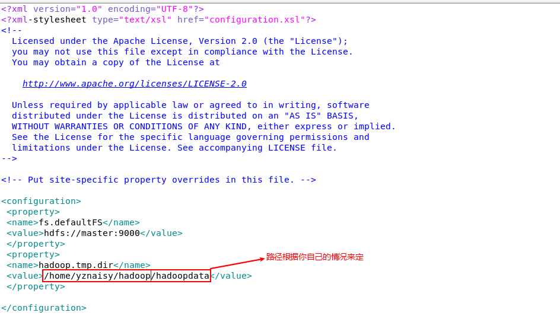
4.4配置hdfs-site.xml
用下面的代码替换 hdfs-site.xml 中的内容：
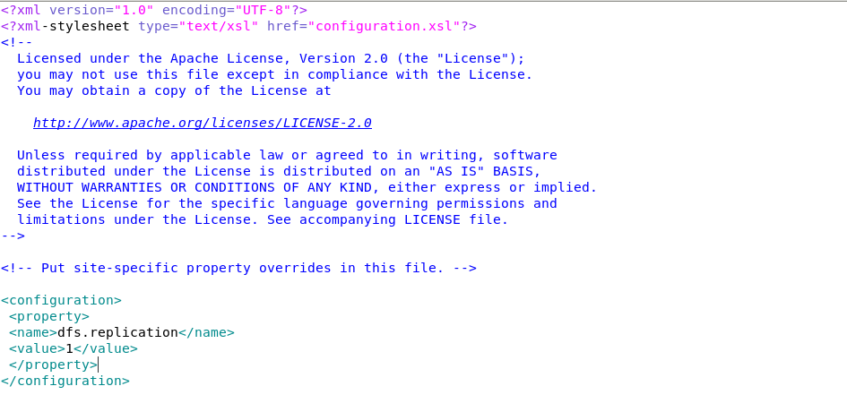
4.5配置yarn-site.xml
用下面的代码替换yarn-site.xml中的内容:
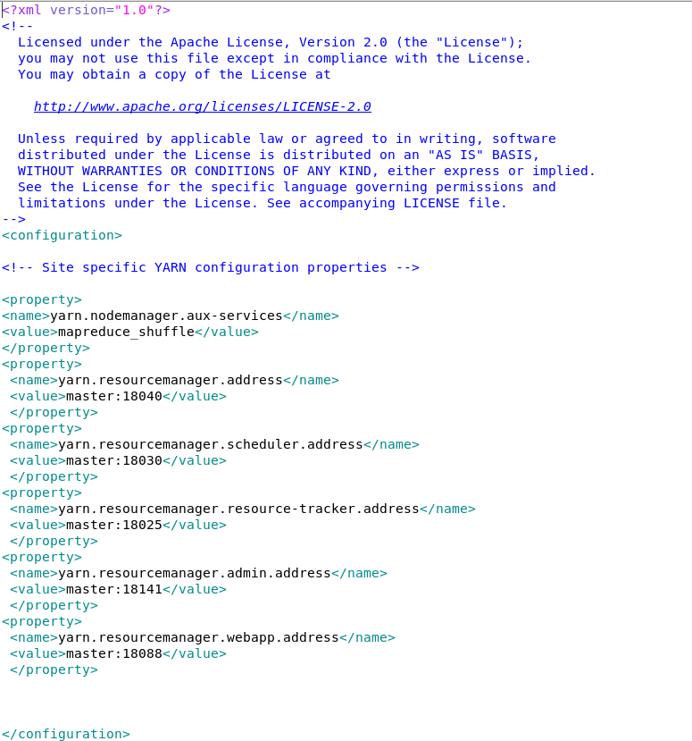
4.6配置mapred-site.xml
复制mapred-site-template.xml 文件：
cp mapred-site.xml.template mapred-site.xml
用下面的代码替换 mapred-site.xml 中的内容:
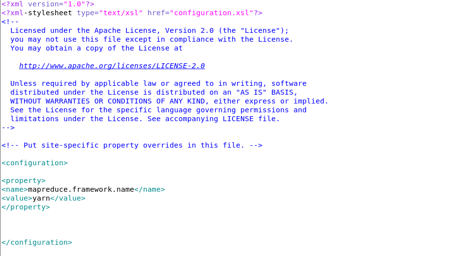
4.7配置slaves
使用 gedit 编辑：
用下面的代码替换 slaves 中的内容：
slave1
slave2
4.7配置环境变量
在你刚才配置环境变量的文件中添加如下配置：
export HADOOP_HOME=Hadoop的安装位置，如：/home/yznaisy/hadoop
export PATH=$HADOOP_HOME/bin:$HADOOP_HOME/sbin:$PATH
将配置好的Hadoop文件和环境变量发送到slave1和slave2
4.8创建数据目录
使用mkdir来创建目录，如：mkdir /home/yznaisy/hadoop/hadoopdata 这个路径与你配置hadoop文件的路径相同(注意三台主机都需要创建目录)
4.9格式化文件系统 hdfs namenode -foramt
4.10启动Hadoop
进入Hadoop安装目录使用命令来启动Hadoop，命令如下：
./sbin/start-all.sh
4.11查看进程是否启动
使用jps查看
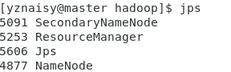
Web UI 查看集群是否成功启动
在 master 上启动 Firefox 浏览器，在浏览器地址栏中输入输入 http://master:50070/，检查
namenode 和 datanode 是否正常。UI 页面如下图所示。
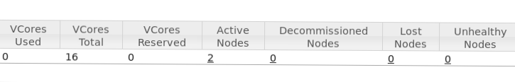
七、hive安装
1、上传hive压缩包
2、解压hive
3、改名为hive
4、修改hive配置文件
Hive安装好后，是没有自带hive-site.xml文件。
进入hive/conf/文件下首先复制hive-default.xml.template到hive-default.xml作为全局配置文件.自己创建hive-site.xml作为可覆盖配置文件
5、编辑hive-site.xml文件,添加如下内容: 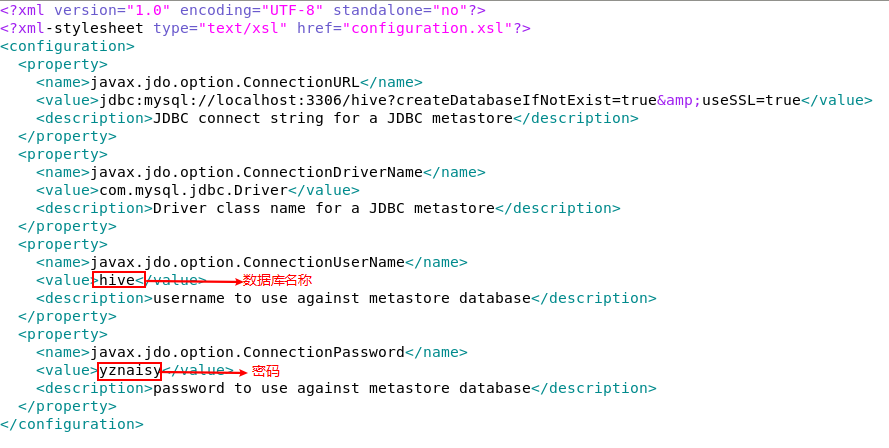
6、连接mysql
将mysql-connector-java-x.x.x-bin.jar复制在hive/lib/目录下
7、配置环境变量
export HIVE_HOME=/home/yznaisy/hadoop/hive
export PATH=$PATH:$HIVE_HOME/bin
export HADOOP_HOME=/home/yznaisy/hadoop/hadoop
8、将配置好的hive文件和环境变量发送到slave1和slave2
不要启动hive，还需要安装MySQL！！！！
不要启动hive，还需要安装MySQL！！！！
不要启动hive，还需要安装MySQL！！！！
八、安装MySQL
1、由于CentOS 的yum源中没有mysql，需要到mysql的官网下载yum repo配置文件
下载命令：wget https://dev.mysql.com/get/mysql57-community-release-el7-9.noarch.rpm
2、然后进行repo的安装：
rpm -ivh mysql57-community-release-el7-9.noarch.rpm
执行完成后会在/etc/yum.repos.d/目录下生成两个repo文件mysql-community.repo mysql-community-source.repo
3、使用yum命令即可完成安装
注意：必须进入到 /etc/yum.repos.d/目录后再执行以下脚本
安装命令：yum install mysql-server
设置开机自启动
systemctl enable mysqld
启动msyql：
systemctl start mysqld
初始化MySQL
mysql_secure_installation（能回车的回车）
4、修改mysql密码
重置密码的第一步就是跳过MySQL的密码认证过程，方法如下：
#vim /etc/my.cnf(注：windows下修改的是my.ini)
在[mysqld]后面任意一行添加“skip-grant-tables”用来跳过密码验证的过程，退出保存即可
重启mysql： systemctl restart mysqld
免密登录：mysql -u root -p
进入数据库：use mysql
修改root密码，命令如下：
update user set authentication_string = password('这里输入新密码'),password_last_changed=now() where
user='root';
退出mysql数据库：quit；
再次修改配置文件：vi /etc/my.cnf 删除 skip-grant-tables 保存退出
重启mysql服务即可
5、登录mysql
然后执行 mysql -uroot -p ，输入上面的到的密码进入，用该密码登录后，必须马上修改新的密码，不然会报如下错误：
mysql> use mysql;
ERROR 1820 (HY000): You must reset your password using ALTER USER statement before executing this
statement.
错误信息为：在执行此语句之前，必须使用ALTER USER语句重置密码。
如果你想要设置一个简单的测试密码的话，比如设置为123456，会提示这个错误，报错的意思就是你的密码不符合要求
mysql> alter user 'root'@'localhost' identified by '123456';
ERROR 1819 (HY000): Your password does not satisfy the current policy requirements
错误信息为：您的密码不符合当前的策略要求
查看 mysql 初始的密码策略，
输入语句 “ SHOW VARIABLES LIKE 'validate_password%'; ” 进行查看
首先需要设置密码的验证强度等级，设置 validate_password_policy 的全局参数为 LOW 即可，
输入设值语句 “ set global validate_password_policy=LOW; ” 进行设值，
当前密码长度为 8 ，如果不介意的话就不用修改了，按照通用的来讲，设置为 6 位的密码，设置 validate_password_length 的全局参数为 6 即可，
输入设值语句 “ set global validate_password_length=6; ” 进行设值，
现在可以为 mysql 设置简单密码了，只要满足六位的长度即可，
输入修改语句 “ ALTER USER 'root'@'localhost' IDENTIFIED BY '123456'; ” 可以看到修改成功，表示密码策略修改成功了！！
关于 mysql 密码策略相关参数；
1）、validate_password_length 固定密码的总长度；
2）、validate_password_dictionary_file 指定密码验证的文件路径；
3）、validate_password_mixed_case_count 整个密码中至少要包含大/小写字母的总个数；
4）、validate_password_number_count 整个密码中至少要包含阿拉伯数字的个数；
5）、validate_password_policy 指定密码的强度验证等级，默认为 MEDIUM；
关于 validate_password_policy 的取值：
0/LOW：只验证长度；
1/MEDIUM：验证长度、数字、大小写、特殊字符；
2/STRONG：验证长度、数字、大小写、特殊字符、字典文件；
6）、validate_password_special_char_count 整个密码中至少要包含特殊字符的个数；
6、新建hive数据库
create database hive;
#这个hive数据库与hive-site.xml中localhost:3306/hive的hive对应，用来保存hive元数据
7、允许MySQL接入hive
grant all on *.* to hive@localhost identified by 'hive';
#将所有数据库的所有表的所有权限赋给hive用户，后面的hive是配置hive-site.xml中配置的连接密码
flush privileges;
#刷新mysql系统权限关系表
8、启动hive
启动hive前一定初始化元数据！！！
启动hive前一定初始化元数据！！！
启动hive前一定初始化元数据！！！
命令如下：
schematool -dbType mysql -initSchema
还需要启动metastore:
hive --service metastore &
然后就可以启动hive了
9、测试hive
在hive交互式执行环境中使用sql语句查询数据库:show databases;
如图表示成功：

九、zookeeper安装
1、上传zookeeper压缩包
2、解压zookeeper
3、改名为zookeeper
4、配置zookeeper文件、
将zoo_sample.cfg修改为zoo.cfg
编辑zoo.cfg，在最后添加下列代码
dataDir=/home/yznaisy/hadoop/zookeeper/data
dataLogDir=/home/yznaisy/hadoop/zookeeper/datalog
server.1=master:2888:3888
server.2=slave1:2888:3888
server.3=slave2:2888:3888
在zookeeper安装目录下创建文件夹：
mkdir data
mkdir datalog
在master上：
echo 1 > data/myid
在slave1上：
echo 2 > data/myid
在slave2上：
echo 3 > data/myid
配置环境变量：
export ZOOKEEPER_HOME=/home/yznaisy/hadoop/zookeeper
export PATH=$PATH:$ZOOKEEPER_HOME/bin
将配置好的zookeeper文件和环境变量发送到slave1和slave2
5、测试zookeeper是否安装成功
进入zookeeper安装目录
./bin/zkServer.sh start
./bin/zkServer.sh status
九、Hbase安装
1、上传Hbase压缩包
2、解压Hbase
3、改名为hbase
4、修改Hbase文件
编辑regionservers在文件中添加：
master
slave1
slave2
修改hbase-site.xml：
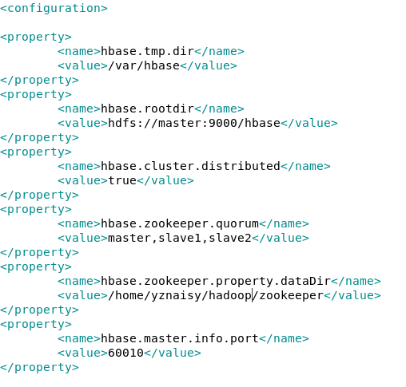
修改hbase-env.sh：
在hbase-env.sh中添加如下两行:
export JAVA_HOME=/home/yznaisy/hadoop/hadoop/jdk1.8.0_141
export CLASSPATH=.:${JAVA_HOME}/lib:${JRE_HOME}/lib
找到如下代码将前面的#号去掉:
#export HBASE MANAGES ZK=true
5、配置环境变量
export HBASE_HOME=/home/yznaisy/hadoop/hbase
export HBASE_CLASSPATH=$HBASE_HOME/conf
export HBASE_LOG_DIR=$HBASE_HOME/logs
export PATH=$PATH:$HBASE_HOME/bin
将配置好的Hbase文件和环境变量发送到slave1和slave2
6、启动Hbase
进入Hbase目录下./bin/start-habse.sh
jps查看进程
关闭Hbase
./bin/stop-hbase.sh
查看Web UI 如同表示成功：
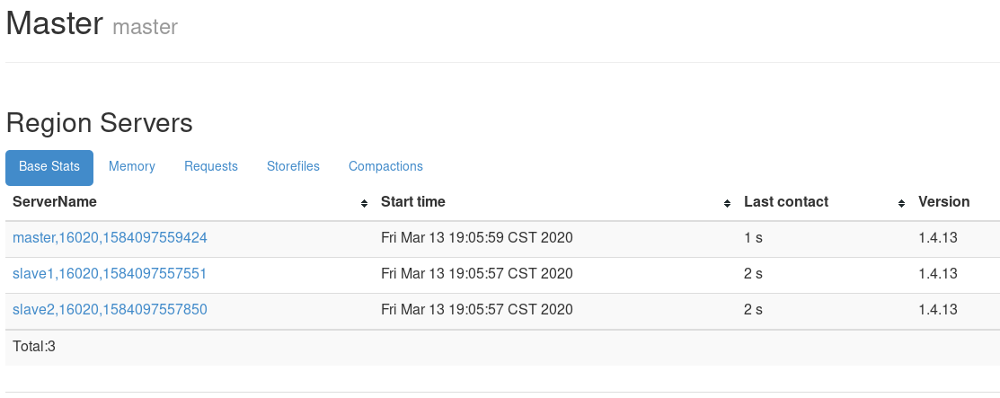
十、Spark安装
1、上传Spark安装包
2、解压Spark
3、改名为spark
4、配置环境变量
export SPARK_HOME=/home/yznaisy/hadoop/spark
export PATH=$PATH:$SPARK_HOME/bin
5、修改Spark文件
进入spark/conf/目录下
将spark-env.sh.template更名为spark-env.sh
编辑spark-env.sh，在最下方添加如下代码：
export JAVA_HOME=/home/yznaisy/hadoop/jdk1.8.0_141
export SPARK_MASTER_HOST=master
export SPARK_MASTER_PORT=7077
将slaves.template更名为slaves
编辑slaves,使用如下代码覆盖原来的代码:
master
slave1
slave2
将配置好的Spark文件和环境变量发送到slave1和slave2
6、启动Spark
启动Spark之前必须启动Hadoop
./bin/stop-hbase.sh
查看Web UI 如同表示成功：
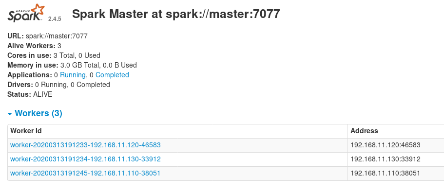
十一、安装Scala
1、上传Scala压缩包
2、解压Scala
3、改名为scala
4、配置环境变量
export PATH=$PATH:/home/yznaisy/hadoop/scala/bin
5、启动Scala
直接在终端输入scala
十二、sqoop安装
1、上传sqoop压缩包
2、解压sqoop
3、改名为sqoop
4、配置环境变量
export SQOOP_HOME=/home/yznaisy/hadoop/sqoop
export PATH=$PATH:$SBT_HOME/bin:$SQOOP_HOME/bin
export CLASSPATH=$CLASSPATH:$SQOOP_HOME/lib
5、配置sqoop文件
将sqoop-env-template.sh更名为sqoop-env.sh
编辑sqoop-env.sh，在最后添加如下代码：
export HADOOP_COMMON_HOME=/home/yznaisy/hadoop/hadoop
export HADOOP_MAPRED_HOME=/home/yznaisy/hadoop/hadoop
export HBASE_HOME=/home/yznaisy/hadoop/hbase
export HIVE_HOME=/home/yznaisy/hadoop/hive
export ZOOKEEPER_HOME=/home/yznaisy/hadoop/zookeeper
export ZOOCFGDIR=/home/yznaisy/hadoop/zookeeper/conf
6、连接mysql
将mysql-connector-java-x.x.x-bin.jar复制在sqoop/bin/目录下
7、验证安装是否成功
sqoop version